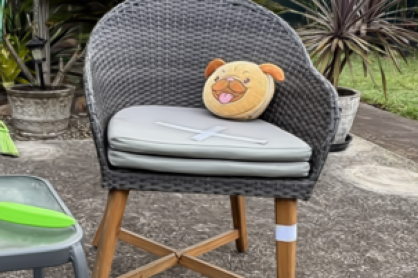
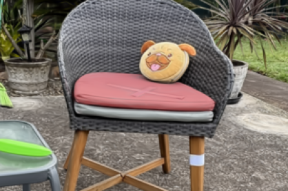
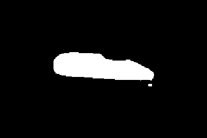

Learning from Automatic 3D Gaussian Splatting Edits for Online Bayesian Scene Change Detection
Learn what change looks like from edits. Update the evidence as new views arrive.
Can a scene provide its own change supervision?
A shared detector needs examples from many scenes—but how much data is enough to cover the changes it might encounter? In many real-world change detection tasks, reference data is collected before the observations we want to check. That time gap lets us prepare for the specific scene in advance.
We automatically edit its 3D Gaussian reconstruction to create labelled change examples and learn from them offline. The models are ready when new views arrive, using the same procedure for every scene.
Render the reference scene at the current camera pose to compare the same viewpoint. The heatmap shows the final score; thresholding at 0.5 gives the binary mask.
Porch
PASLCD / Instance 1 · View 10How it works: learn from reference edits offline, then accumulate evidence as new views arrive.
Drag to compare the reference and current observation. Turn on Mask or Probability to inspect the recorded model output.
Learning from edits.
Edit the reference 3D Gaussian scene to generate labelled change pairs. Use these pairs and unchanged reference views to fit the scene-specific components before deployment.
What does an edit look like?
Rendered edits are transferred onto real reference images to form synthetic observations. Lighting variations preserve the change labels.
Add the rendered edit difference to the real image, retaining its image–render discrepancies. Pixel values are clipped to [0, 1].



Recolouring changes the chair cushion. White marks the edited region; this is a training label, not a model prediction.
One view is not the whole story.
A strong response in one image may come from a real change, lighting, or reconstruction error. We compare each Gaussian’s response with its expected behaviour in an unchanged scene, accounting for response uncertainty. Local Bayes factors then add evidence for or against change to a shared 3D history, without replaying past images or optimizing online.
- Ct
- Current-view evidence
- Ht
- Historical support from earlier views
- Qtfull
- Final refined change score
- Ft
- Updated 3D log-evidence field
Measured across 20 scene-instances.
Our full online method improves mIoU by 18.40 percentage points over O-SCD(O) under the same local evaluation. Pixel-only results show performance before object-guided refinement.
| Method | Processing | mIoU ↑ | F1 ↑ |
|---|---|---|---|
| Paper-reported results | |||
| SCaR-3D | Offline | 19.10 | 28.90 |
| 3DGS-CD | Offline | 20.90 | 33.90 |
| MV3DCD | Offline | 46.10 | 61.20 |
| GS-Diff | Offline | 64.40 | 75.80 |
| Our evaluation | |||
| O-SCD(O) | Online | 49.24 | 64.60 |
| O-SCD(R) | Offline | 55.99 | 70.27 |
| Ours · Pixel | Online | 60.36 | 73.80 |
| Ours · Full | Online | 67.64 | 78.87 |
Our scores average two complete runs. mIoU measures mask overlap; F1 balances precision and recall. O-SCD variants are locally re-evaluated; the other baselines are reported in the cited papers listed in our manuscript. Online/offline describes query processing; our scene-specific fitting is offline.
Two mask protocols: published results use post-state masks; our evaluation uses pre ∪ post masks to include both vacated and newly occupied regions. Compare methods within each group.
| Method | Processing | mIoU ↑ | F1 ↑ |
|---|---|---|---|
| Paper-reported · Post-state masks · For context | |||
| MV3DCD | Offline | 30.40 | 44.10 |
| CL-Splats | Offline | 39.90 | 53.80 |
| 3DGS-CD | Offline | 41.60 | 51.20 |
| SCaR-3D | Offline | 65.00 | 72.40 |
| Our evaluation · Union masks (pre ∪ post) | |||
| O-SCD(O) | Online | 49.94 | 64.61 |
| O-SCD(R) | Offline | 43.59 | 57.82 |
| Ours · Pixel | Online | 66.83 | 79.47 |
| Ours · Full | Online | 75.82 | 85.90 |
Four scenes: livingroom, desk, bookcase and bedroom, weighted equally over two runs. mIoU measures mask overlap; F1 balances precision and recall. The highlighted improvement compares our full method with O-SCD(O) under the same union-mask evaluation. Online/offline describes query processing; our scene-specific fitting is offline.
Compare the detections.
Change across views.
Two complete 25-view sequences. Watch at the measured mean processing rate, then at quarter speed to inspect the detections.
Timing covers all 25 frames across 20 PASLCD instances after initialization, including input waits and frame-to-frame overhead. The full method averages 58.23 ms/frame (17.2 FPS); the pixel pipeline runs at 27.9 FPS. Playback uses the full method’s aggregate rate.